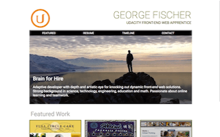

GitHub Projects
Live demos of my Udacity web development work.
Map
Mapclose
HTML, CSS, JAVASCRIPT, GOOGLE MAPS API, OPEN WEATHER MAP API, MVVM, KNOCKOUT, JQUERY
This project has real world application, as it is may be used for Outreach Education at ROUND RIVER CONSERVATION, which is a NGO Non-Profit. Google Map API provides the map and mapping functionalities, and Open Weather Map API provides real time weather data for specific locations. Information for each location is provided by BLAH BLAH BLAH...

